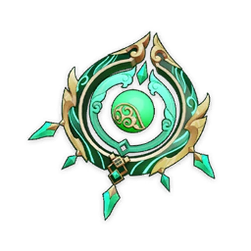

Best artifact set for Baizhu:
Deepwood memories (4 piece)

Best weapons for Baizhu:

Optimal weapon: Jadefalls' splendor
Alternate options:


Best teams for Baizhu:
Team: Baizhu, Cyno(DPS), Nahida, Yelan


Team: Baizhu, Alhaitham(DPS), Kuki Shinobu, Xingqiu


Team: Baizhu, Alhaitham(DPS), Thoma, Xingqiu

Team: Baizhu, Yelan(DPS), Thoma, Kuki Shinobu

C1
Attentive Observation
Universal Diagnosis gains 1 additional charge.
C2
Incisive Discernment
When your own active character hits a nearby opponent with their attacks, Baizhu will unleash a Gossamer Sprite: Splice. Gossamer Sprite: Splice will initiate 1 attack before returning, dealing 250% of Baizhu's ATK as Dendro DMG and healing for 20% of Universal Diagnosis's Gossamer Sprite's normal healing. DMG dealt this way is considered Elemental Skill DMG. This effect can be triggered once every 5s.
C3
All Aspects Stabilized
Increases the level of Holistic Revivification by 3. Maximum upgrade level is 15.
C4
Ancient Art of Perception
For 15s after Holistic Revivification is used, Baizhu will increase all nearby party members' Elemental Mastery by 80.
C5
The Hidden Ebb and Flow
Increases the Level of Universal Diagnosis by 3. Maximum upgrade level is 15.
C6
Elimination of Malicious Qi
Increases the DMG dealt by Holistic Revivification's Spiritveins by 8% of Baizhu's Max HP. Additionally, when a Gossamer Sprite or Gossamer Sprite: Splice hits opponents, there is a 100% chance of generating one of Holistic Revivification's Seamless Shields. This effect can only be triggered once by each Gossamer Sprite or Gossamer Sprite: Splice.